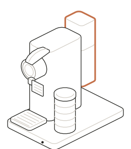
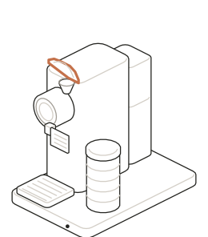
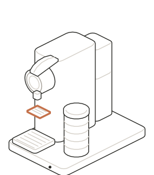
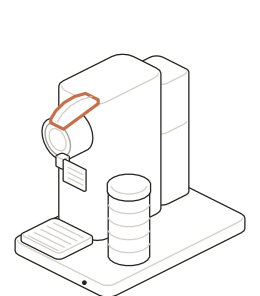
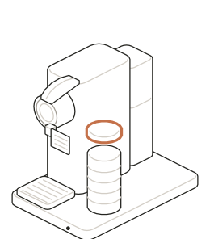

Coffee
How to use the Nespresso.
A Nespresso CitiZ with a milk frother on the same base. Capsules are in the glass jar next to it. Coffee in about a minute.

Coffee
Espresso or a longer cup, from one capsule.
-

Fill the water tank
The clear tank on the back lifts straight up. Fill it with fresh water from the tap and set it back down.
It holds about a liter, enough for several cups.
-
Turn it on
Press either button on top of the machine. The lights blink while it heats up, about 25 seconds. When they stop blinking, it's ready.
-

Lift the lever, drop in a capsule
Lift the lever on top all the way up and drop a capsule into the slot. It only fits one way, so let it fall into place.
-

Close the lever, set your cup
Push the lever back down until it closes. Put a cup under the spout.
For a small espresso cup, use the flip-down shelf so the coffee doesn't splash. For a mug, fold the shelf up and set the mug on the tray.
-
Press a button
Small cup button: espresso (about 40 ml). Tall cup button: lungo, a longer cup (about 110 ml).
It stops by itself. Press the button again if you want to stop it early.
-

Toss the capsule
Take your cup, then lift the lever and close it again. The used capsule drops into the bin inside the machine.
The bin holds about 10. If the machine gets fussy about closing, it's probably full: slide out the tray at the bottom, which brings the bin with it, and empty it in the trash.
Milk
The frother on the right heats milk, froths it hot, or froths it cold.
-

Pour in cold milk
Inside the jug are two lines. For froth, fill to the lower line. For hot milk without foam, fill to the upper line.
The little whisk at the bottom has a coiled spring. Spring on for froth. Pull the spring off for plain hot milk. Whole or 2% milk froths best.
-
Lid on, press the button
Put the lid on, then press the button on the front of the base.
Tap once for hot (the light turns red, about 75 seconds). Hold for 2 seconds for cold froth (the light turns blue, about a minute). It stops on its own.
-
Rinse the jug
Lift the jug off the base and rinse it out with warm water and a soft sponge right away, before the milk dries. No dishwasher, and keep the base dry.
Good to know
- The machine turns itself off after 9 minutes. To turn it off sooner, press both buttons together.
- Nothing coming out? Check the water tank first.
- Frother light blinking red: the whisk is missing, there isn't enough milk, or it needs a few minutes to cool down.